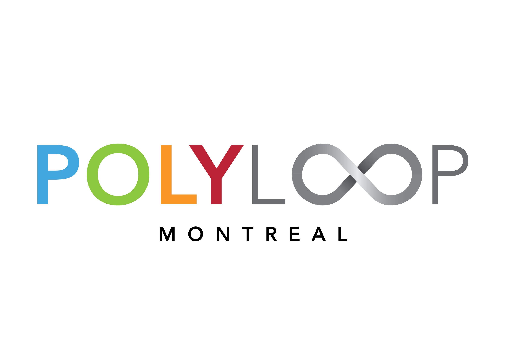

<mat-sidenav-container class="sidenav-container">
    <mat-sidenav #drawer class="sidenav" (focusout)="drawer.close()"
        [attr.role]="(isHandset$ | async) ? 'dialog' : 'navigation'" mode="over" [fixedInViewport]="true" fullscreen>
        <mat-nav-list>
            <a *ngFor="let link of links" type="button" class="nav-but-mobile" href="{{link.href}}">{{link.name}}</a>
        </mat-nav-list>
    </mat-sidenav>

    <mat-sidenav-content id="content" class="justify-content-center">
        <mat-toolbar id="bar" color="primary">
            <button *ngIf="!isBigScreen" id="toggle" class="navbar-toggler toggler-example" type="button"
                data-toggle="collapse" data-target="#navbarSupportedContent1" aria-controls="navbarSupportedContent1"
                aria-expanded="false" aria-label="Toggle navigation" (click)="drawer.toggle()"><span
                    class="dark-blue-text"><i class="fas fa-bars fa-1x"></i></span>
            </button>
            <span *ngIf="!isBigScreen" class="fill-remaining-space"></span>
            <span *ngIf="isBigScreen" class="fill-remaining-space"></span>
            <a href="/home">
                
            </a>
            <nav class="nav nav-pills flex-column flex-sm-row" *ngIf="isBigScreen">
                <li *ngFor="let link of links; let i = index">
                    <a *ngIf="i < 5" type="button" class="nav-but" id="{{i}}" (click)="changePage(i)" routerLink="{{link.href}}">{{link.name}}</a>
                </li>
                <li>
                    <button type="button" class="nav-but" [matMenuTriggerFor]="menu"
                        style="background-color: transparent; border-color: transparent; font-weight: 500;">{{links[5].name}}</button>
                    <mat-menu #menu="matMenu" style="z-index: 9999;">
                        <button mat-menu-item (click)="this.switchLanguage('FR')">Français</button>
                        <button mat-menu-item (click)="this.switchLanguage('EN')">English</button>
                    </mat-menu>
                </li>
            </nav>
            <span *ngIf="isBigScreen" class="fill-remaining-space"></span>
            <span *ngIf="!isBigScreen" class="fill-remaining-space"></span>
        </mat-toolbar>
        <ng-content></ng-content>
    </mat-sidenav-content>
</mat-sidenav-container>